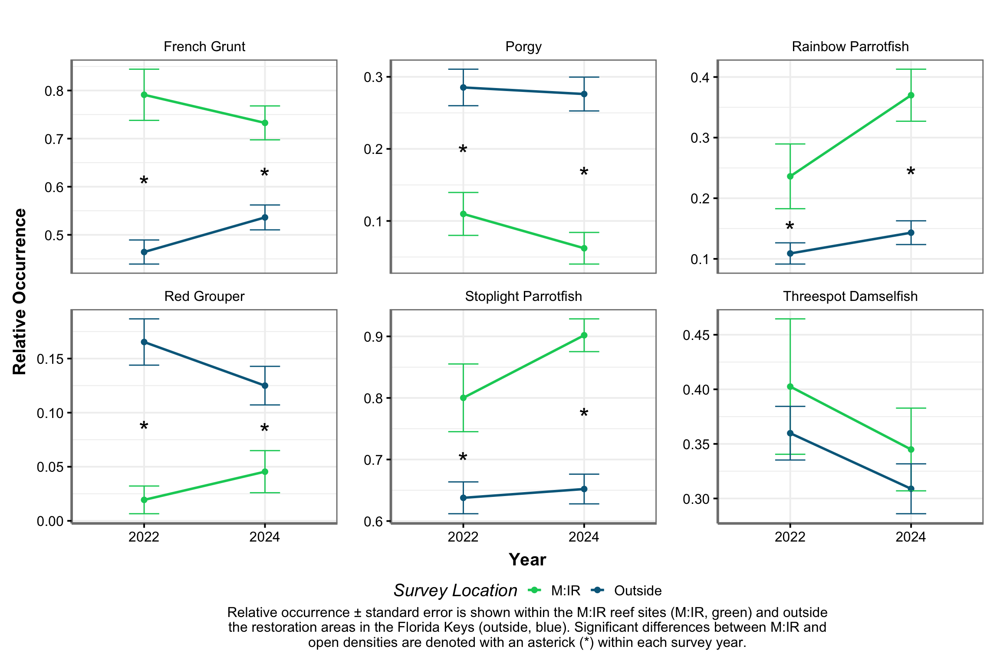
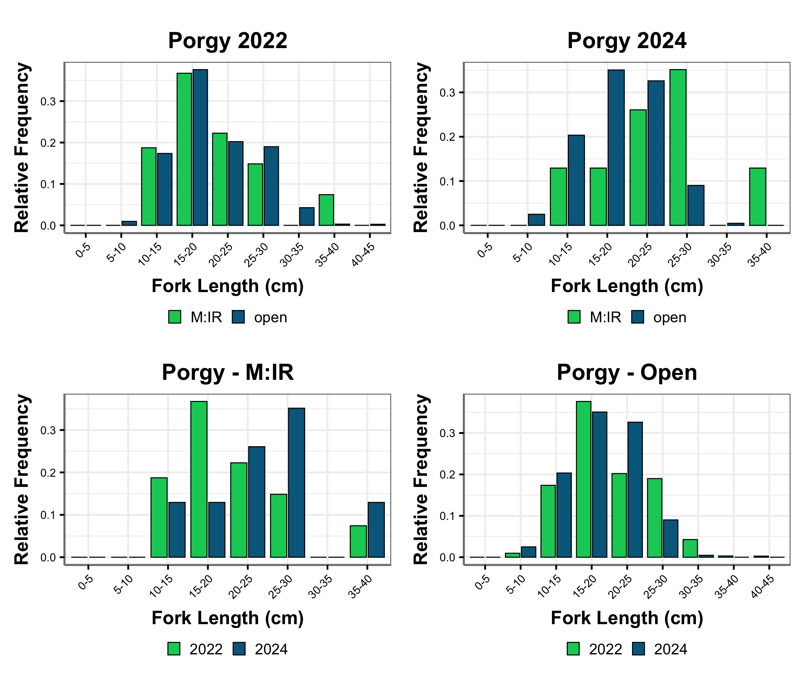

Jeremiah Blondeau1, Jay Grove1, Rob Harper1,2
1 NOAA Fisheries, Southeast Fisheries Science Center
2 University of Miami, Cooperative Institute for Marine and Atmospheric Studies
1 Introduction
Mission: Iconic Reefs is a multi-institutional initiative designed to restore ecological function and biodiversity across ‘iconic’ reef sites in the Florida Keys. Led by NOAA in collaboration with federal, state, institutional, and non-profit partners, M:IR targets nearly three million square feet of reef at seven coral reefs in the Florida Keys National Marine Sanctuary (FKNMS): Carysfort (North and South), Cheeca Rocks, Eastern Dry Rocks, Horseshoe Reef, Looe Key, Newfound Harbor, and Sombrero Reef. The overarching M:IR goal is to restore coral cover and reef function to a self-sustaining state.
Monitoring changes in reef fish populations is one way to measure the success and broader ecological impacts of coral restoration interventions. To properly interpret restoration progress at M:IR reef sites, it is important to also collect data at sites from the surrounding Florida Keys reef tract. The National Coral Reef Monitoring Program (NCRMP), which conducts standardized reef assessments across the Florida Keys, provides a solid framework for comparison and to contextualize the progress at M:IR sites (Feeley et al., 2025).
Reef fish surveys at M:IR sites and at sites throughout the Florida Keys both used NCRMP’s sampling design and survey method. Non-extractive reef fish surveys occurred on shallow (<30 m), hard-bottom reef habitats using a stratified-random, one-stage sampling design within 50 m × 50 m grid cells to ensure representative sampling across depth and rugosity strata (i.e., different habitats) (Ault et al., 2021; CRCP, 2024). Surveys used a stationary-point-count method modified from Bohnsack and Bannerot (1986) where a two-diver team surveyed all fish within adjacent 15-m diameter cylinders centered on each diver. Within each cylinder, fishes were identified to the species level, tallied, and fork length was estimated to the nearest centimeter (CRCP, 2024).
This report shows population-level results of relative density, occurrence, and length frequency distributions for ecologically important, economically valuable, and fish species of interest to coral restoration practitioners and resource managers. This report focuses on reef fishes within the M:IR and NCRMP sampling domains; a separate report shows results for coral population and benthic community metrics (Krampitz et al., 2025).
1.1 Map of M:IR Sites
2 Data Analyses
To allow for direct comparisons of fish populations inside the M:IR restoration areas with control, non-restored areas across the Florida Keys reefs, the NCRMP dataset was restricted to strata types and depth zones (0–12 m) found within M:IR sites (Table 1). Data collected by the diver pair were averaged at the site level. Standard fish metrics, including relative density, occurrence, and length composition, were evaluated for the selected fish species (Table 2). Computational formulas of standard metrics for a single-stage stratified random sampling design are modified from (Smith et al., 2011) and provided in detail in (Grove et al., 2021) and (Bryan et al., 2016). Statistical comparisons evaluated differences in density and occurrence estimates inside M:IR areas and outside of M:IR areas (i.e., NCRMP) for each survey year. Statistical significance was accepted at p=0.05. Fish analysis scripts are open source and available through the NCRMP Fish R package (Ganz & Blondeau, 2015).
2.1 Strata
2.2 Fish Species
3 Density
Each survey year, M:IR and NCRMP surveys capture a snapshot of coral reef fish populations. It is common for fish populations to fluctuate annually due to a number of factors including, but not limited to, recruitment success, predator-prey dynamics, fishing pressure, and natural events (e.g., hurricanes, marine heat waves). Whenever possible, resource managers should evaluate multiple years of fish density data to inform and assess management efforts, including the success of habitat restoration. Consistently higher or increasing densities over time within restored areas suggests these areas are providing high-quality habitat for reef fishes.

4 Occurrence
Monitoring species occurrence, or how often a species is detected in surveys, offers valuable insight into its distribution. This metric provides presence data regardless of abundance, which helps to identify whether a species is widespread or rare. For resource managers, species occurrence can be used as a bioindicator of overall ecosystem health and to evaluate the success of restoration projects. A consistently higher occurrence of a fish species, especially of a rare species or an obligate coral dweller, within coral restoration areas serves as an indicator of high-quality habitat.

5 Length Frequency
Length compositions provide a detailed description of a fish’s population structure. These highly informative figures can show the length at which a species recruits to the coral reef from their nursery habitat, the length classes that are selected by local recreational and commercial fisheries, the effectiveness of fisheries management regulations, and the success of habitat restoration efforts. Successful coral restoration improves habitat quality and reef complexity, which provides structural protection for smaller size classes and foraging opportunities for larger sizes classes.
Relative length frequency by fork length (cm) bin is shown for each species within each sampling domain (i.e., M:IR restoration areas and NCRMP outside restoration areas) and between each sampling domain by survey year.




6 Points of Contact
NCRMP Atlantic and Caribbean Fish Team Lead: Jay Grove (jay.grove@noaa.gov)
NCRMP Atlantic and Caribbean Fish Data Manager: Jeremiah Blondeau (jeremiah.blondeau@noaa.gov)
7 References
Ault, S. J., Smith, G. S., Luo, J., Grove, J. L., Johnson, W. M., & Blondeau, J. (2021). Refinement of the southern florida reef tract benthic habitat map with habitat use patterns of reef fish species [Dataset]. NOAA National Centers for Environmental Information. https://www.ncei.noaa.gov/archive/accession/0224176
Bryan, D. R., Smith, S. G., Ault, J. S., Feeley, M. W., & Menza, C. W. (2016). Feasibility of a regionwide probability survey for coral reef fish in puerto rico and the u.s. Virgin islands. Marine and Coastal Fisheries, 8(1), 135–146. https://doi.org/10.1080/19425120.2015.1082520
CRCP, N. (2024). National coral reef monitoring program (NCRMP) reef visual census (RVC) fish survey protocols u.s. Atlantic: Florida, flower garden banks, puerto rico, and u.s. Virgin islands (p. 22). NOAA Coral Reef Conservation Program. https://doi.org/10.25923/1y7h-cf65
Feeley, M. W., Brandt, M. E., Bryan, D. R., Zurcher, N., Acosta, A., Ault, J. S., Blondeau, J., Bohnsack, J. A., Grove, L. J., Keller, J. A., McDonough, V., Richter, L., Smith, S. G., & Swanson, D. W. (2025). A cooperative multiagency reef fish monitoring protocol for the florida and US virgin islands coral reef ecosystems: Protocol narrative version—2.0 (Science Report NPS/SR—2025/327). National Park Service. https://doi.org/10.36967/2310167
Ganz, H., & Blondeau, J. (2015). Reef visual census statistical package in r. R package. https://github.com/jeremiaheb/rvc
Grove, L. J. W., Blondeau, J., & Ault, J. S. (2021). National coral reef monitoring program’s reef fish visual census metadata for the u.s. caribbean. NOAA Southeast Fisheries Science Center. https://doi.org/10.25923/39r6-9578
Smith, S. G., Ault, J. S., Bohnsack, J. A., Harper, D. E., Luo, J., & McClellan, D. B. (2011). Multispecies survey design for assessing reef‐fish stocks, spatially explicit management performance, and ecosystem condition. Fisheries Research, 109(1), 25–41. https://doi.org/10.1016/j.fishres.2011.01.012
Data Sources:
National Centers for Coastal Ocean Science (NCCOS) and Southeast Fisheries Science Center (SEFSC) (2022). National Coral Reef Monitoring Program: Assessment of coral reef fish communities in Florida from 2022-06-01 to 2022-12-16 (NCEI Accession 0282183). [indicate subset used]. NOAA National Centers for Environmental Information. Dataset. https://www.ncei.noaa.gov/archive/accession/0282183
2024 Florida Fish Data: National Centers for Coastal Ocean Science (NCCOS); NOAA Southeast Fisheries Science Center (SEFSC) (2024). National Coral Reef Monitoring Program: Assessment of fish communities in the Florida Reef Tract from 2024-05-29 to 2024-11-26 (NCEI Accession 0306184). [indicate subset used]. NOAA National Centers for Environmental Information. Dataset. https://www.ncei.noaa.gov/archive/accession/0306184